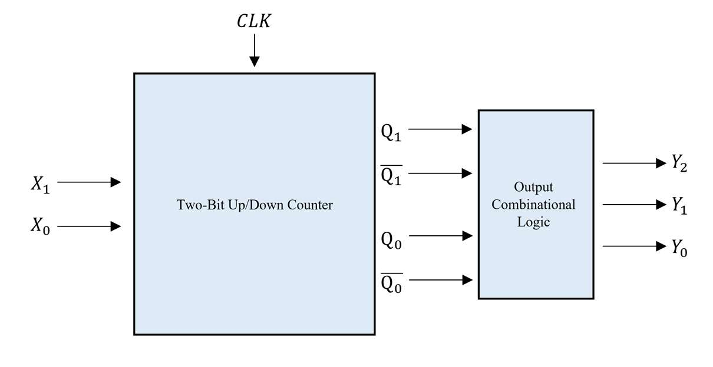
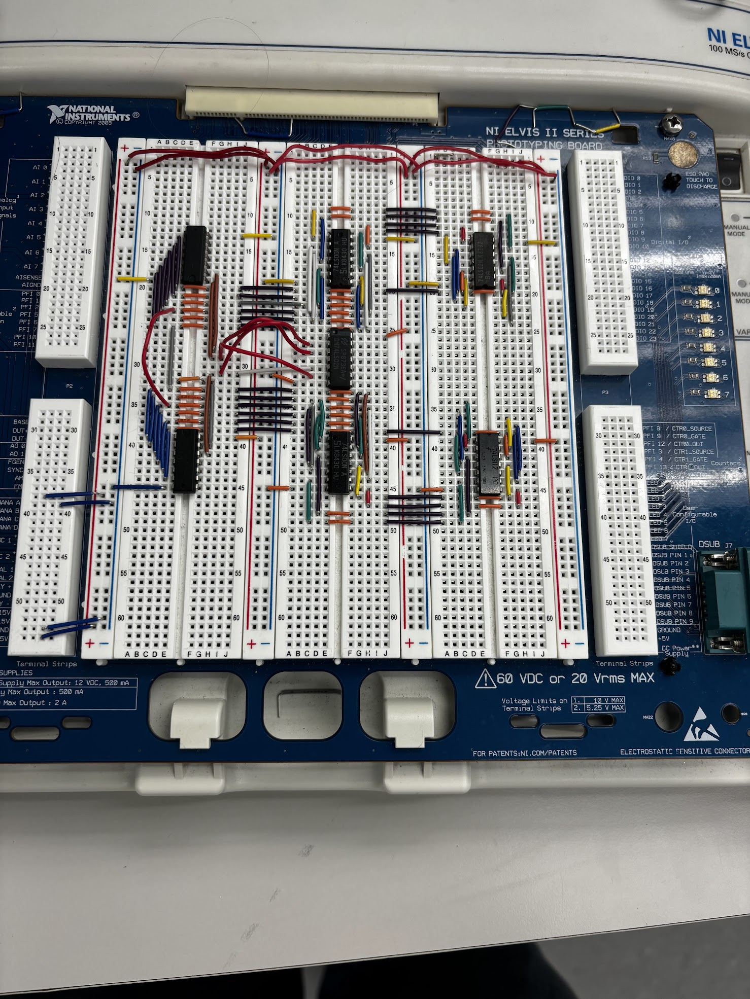
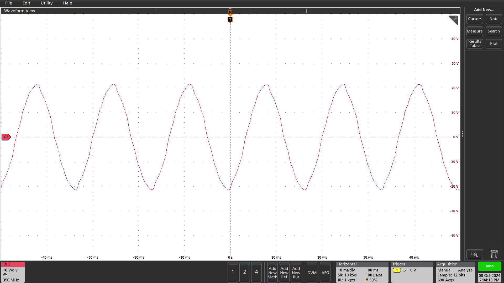
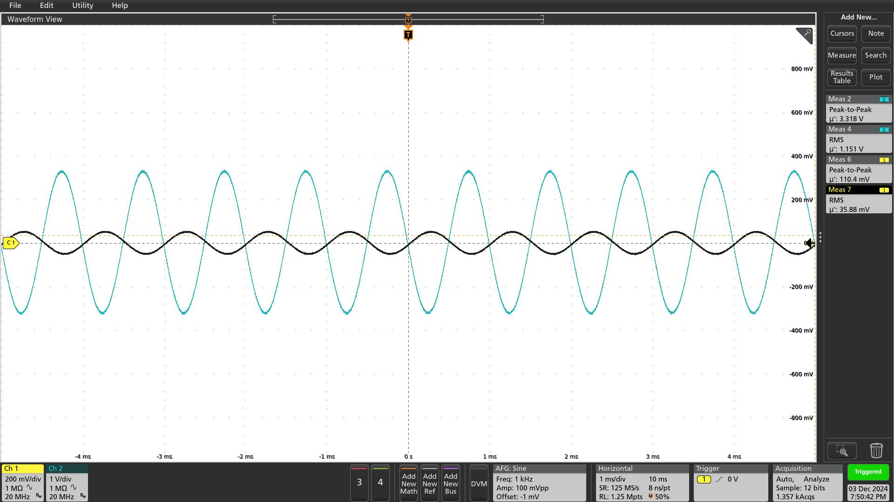
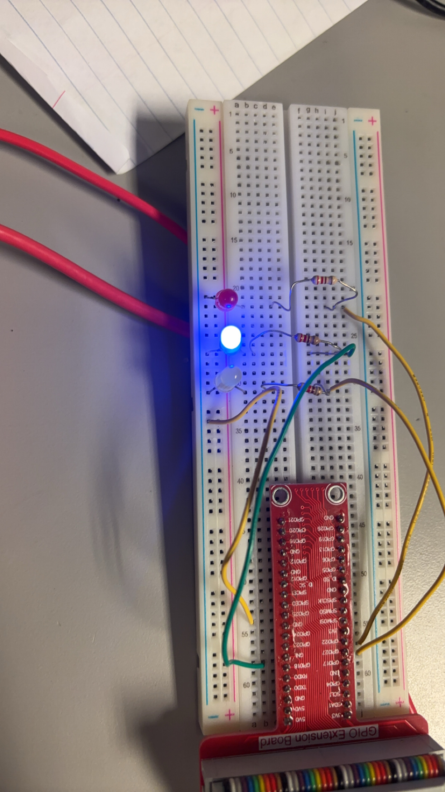
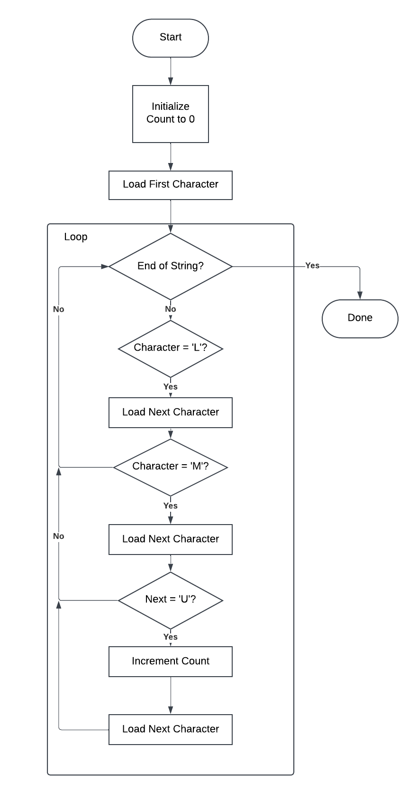

Overview
Designed, simulated, and built analog and digital circuits across two semesters of EE Junior Lab — culminating in a discrete-transistor op-amp that hit every spec and a synchronous prime counter verified from VHDL through hardware. These projects sharpened my ability to translate theory into working circuits and debug them with real instruments.
Operational Amplifier Design
Achieved 467.87 V/V midband gain (spec: 400–500) and 2.1 V peak-to-peak output swing (spec ≥ 2 V) with a four-stage discrete-transistor op-amp I designed from scratch in LTSpice and validated on a breadboard. Every performance target was met or exceeded:
- Differential input stage: Matched pair (LM3046M) biased by a Widlar current source at ~200 μA per side — delivered 58.6 kΩ input impedance (3× the 20 kΩ spec) and strong common-mode rejection.
- Darlington CE gain stage: Provided the bulk of the voltage gain; a 100 μF bypass capacitor set the low-frequency cutoff at 45 Hz, well within the ≤ 100 Hz requirement.
- Level shifter: Centered the output at < 10 mV DC offset using a 3.3 kΩ emitter resistor to bridge the 6.6 V difference between stages.
- Emitter-follower output: Drove a 200 Ω load with output impedance below 200 Ω and unity voltage gain.


Prime Number Counter
Built a synchronous up/down prime number counter that cycles through {2, 3, 5, 7} — verified first in VHDL simulation, then implemented on a physical breadboard with 74LS-series ICs. The design passed all test cases on the first hardware attempt:
- State machine: Designed a 4-state Moore machine using two JK flip-flops, with excitation logic minimized via Karnaugh maps for compact gate count.
- Output logic: Converted 2-bit state encoding to 3-bit prime output (e.g., state 00 → 010 = 2) through a dedicated combinational module.
- VHDL verification: Wrote a testbench confirming correct counting in both directions, enable/disable control, and accurate prime encoding before committing to hardware.
- Hardware build: Assembled on an NI ELVIS II breadboard with 74LS32, 74LS04, 74LS11 gates and 7473 JK flip-flops, clocked at 1 Hz from a Tektronix function generator.




Additional Lab Highlights
The two-semester sequence also developed my hands-on measurement and embedded programming skills:
Semester 1 — Analog Circuits
- Transformer & Power Supply: Built a full-wave rectifier supply and characterized its ripple, regulation, and load behavior on an oscilloscope.
- Common-Emitter Amplifier: Designed a single-transistor CE amplifier, measured gain and distortion limits, and constructed Bode plots from swept frequency data.
- LabVIEW Instrumentation: Developed virtual instruments for automated transistor curve tracing and data acquisition via NI ELVIS II.


Semester 2 — ARM Assembly & Embedded Systems
- String Processing in ARM Assembly: Wrote a Raspberry Pi program in ARM assembly that parses a string, counts "LMU" occurrences, and displays the result on GPIO-connected LEDs.
- Digital Clock in ARM Assembly: Implemented a full 24-hour clock in ARM assembly with delay-loop timekeeping and a 7-segment display driver — no OS or libraries.

